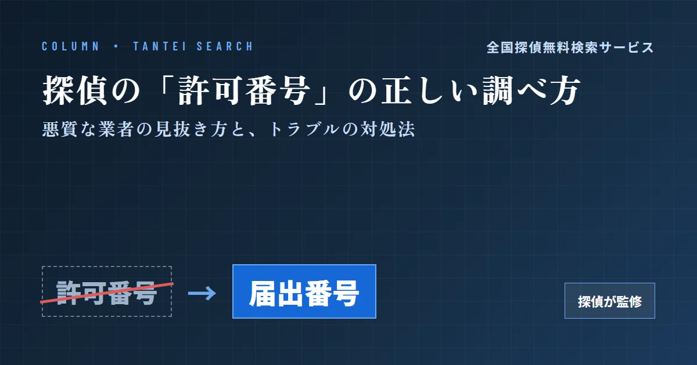
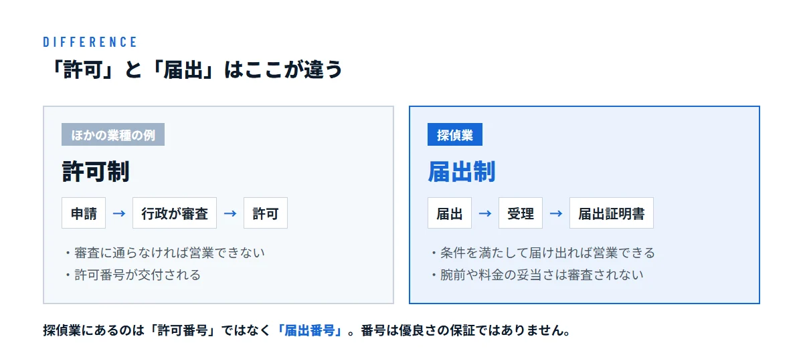
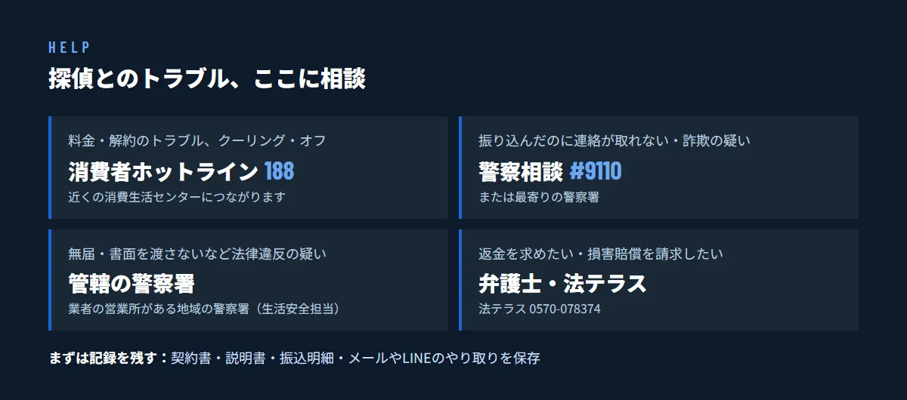

探偵の「許可番号」は存在しない？届出番号の正しい調べ方と、悪質な業者の見抜き方・トラブルの対処法


この記事は探偵が監修しています
監修：佐藤 良太（ラクーン探偵社 代表（合同会社EXE RESEARCH））
探偵への依頼を考えているとき、「この事務所は本当に大丈夫だろうか」と不安になり、「探偵 許可番号」や「探偵番号」と検索する方は少なくありません。ところが、探偵業には「許可番号」というものはありません。探偵業は許可制ではなく「届出制」だからです。
この記事では、探偵業の正しい仕組みと届出番号の調べ方、番号だけでは見抜けない悪質な業者の特徴、そして万一トラブルに巻き込まれたときの相談先を、現役の探偵の監修のもとで解説します。
探偵業に「許可番号」はない。あるのは「届出番号」
探偵の仕事は、2007年6月に施行された「探偵業の業務の適正化に関する法律」（探偵業法）でルールが決められています。探偵業を始める人は、営業を始める日の前日までに、営業所がある都道府県の公安委員会へ届出をしなければなりません。窓口は営業所のある地域を受け持つ警察署です。
届出が受理されると「届出証明書」が交付されます。そこに記載されているのが届出番号です。ホームページの会社概要などで「東京都公安委員会 第3026○○○○号」のように書かれているのが、この番号です。「許可番号」「探偵番号」と呼ばれることもありますが、正しくは「探偵業届出証明書番号」、略して「届出番号」といいます。
ここで大切なのは、「届出」と「許可」の違いです。

つまり、届出番号は「法律で決められた手続きを済ませている」ことの証であって、「優良な事務所だと国がお墨付きを与えた」という意味ではありません。この点を勘違いしていると、「番号があるから安心」と契約を急いでしまい、後で後悔することになりかねません。
届出番号の見方と、正しい確かめ方
届出番号は8桁の数字で、最初の2桁が届出先の都道府県、次の2桁が届出をした年（西暦の下2桁）、最後の4桁がその年の受付順を表しています。たとえば「3026○○○○」なら、東京都（30）に2026年（26）に届出をした業者という意味です。都道府県ごとの番号の一覧は、探偵業の届出番号とは？8桁の読み方と、失敗しない探偵の選び方で詳しく紹介しています。
番号は、次のような方法で確かめられます。
- 事務所のホームページや広告を見る：多くの事務所は、会社概要やページの下部に載せています。
- 届出証明書を見せてもらう：探偵業者は、届出証明書を営業所の見やすい場所に掲示することが義務づけられています。面談のときに確かめましょう。
- 電話やメールで直接聞く：きちんと届出をしている事務所なら、すぐに答えられます。
- 全国探偵無料検索サービスで照らし合わせる：業者名や都道府県から、公安委員会に届出をしている業者を探せます。事務所の名前と所在地が、届出の内容と合っているかを確かめましょう。
気をつけたいのは、法律で掲示が義務づけられているのは「営業所」であって、ホームページへの記載は義務ではないという点です。ホームページに番号がないからといって、すぐに無届とは限りません。ただし、尋ねても番号を教えてくれない、答えをはぐらかすといった場合は、依頼を見送ったほうがよいでしょう。届出をせずに探偵業を営むことは法律違反で、罰則の対象です。
また、番号の頭2桁と事務所の所在地が合っているかも見ておきましょう。東京都の事務所なのに頭2桁が「30」でない場合は、移転したなど事情があるのかを尋ねてみると安心です。
番号だけで安心しない。契約前に確かめたい5つのこと
届出番号は入口にすぎません。悪質な業者を避けるために、契約の前に次の5つを確かめてください。
1. 所在地を確かめ、実際に会って話せるか
契約の前に、事務所の所在地（番地や建物名まで）を教えてもらえるか、担当者と面と向かって話せるかを確かめましょう。小さな事務所の中には、防犯やプライバシーの理由からホームページでは市区町村までしか載せていないところもあります。それ自体は問題ありませんが、依頼を検討している人にも所在地を明かさない、面談を拒んで電話だけで契約させようとする、といった場合は注意が必要です。トラブルになったときに連絡がつかなくなるおそれがあるからです。
2. 契約の前に、書面で説明を受けられるか
探偵業法では、契約を結ぶ前に料金や調査の内容などの重要事項を書面で説明し、契約したときには内容を記した書面を渡すことが義務づけられています。口頭の説明だけで契約を進めようとする業者には依頼しないでください。
3. 料金の内訳と「追加料金」の条件が書かれているか
調査料のほかに、車両費や交通費などの経費がどこまで含まれるか、調査を延長したときにいくらかかるかを確かめましょう。成功報酬の場合は、「何が分かれば成功か」が書面で決まっているかが特に大切です。
4. 違法な方法を持ちかけてこないか
探偵にも特別な調査の権限はありません。盗聴器の設置や、他人の車への無断のGPS設置、金融機関や携帯会社から個人情報を聞き出すことなどを「できます」という業者は、それだけで危険です。依頼者自身が巻き込まれるおそれもあります。
5. 契約を急がせないか
「今日決めれば半額にします」「今すぐ動かないと証拠が消えます」と強く迫ってくる業者には要注意です。一度持ち帰って、ほかの事務所の見積もりと比べてからでも遅くはありません。
悪質な業者によくある手口
探偵をめぐるトラブルには、いくつかの典型的なパターンがあります。契約の前に知っておくだけで、多くは防げます。
- 極端に安い広告で誘い、後から高額にする：「1時間2,000円〜」などの文句で相談を集め、実際には調査員の人数や機材費を重ねて高額な見積もりを出してくる。
- 「必ず証拠を取れます」と断言する：調査の結果は、対象者の行動次第です。結果を約束するような言い方は、注意が必要です。
- 前金を振り込んだ後に連絡が取れなくなる：電話やメールだけで契約を結ばせ、入金を確認したとたんに連絡が途絶える。
- 報告がずさんなのに、追加料金を求めてくる：「あと少しで証拠が取れる」と延長を繰り返し、結局しっかりした報告書が出てこない。
- 「解約するなら全額いただきます」と言う：解約の条件を契約時に説明せず、あとから高額な違約金を請求する。
どの手口にも共通するのは、「書面での説明がない」「契約を急がせる」ことです。反対に、契約書や重要事項の説明書が手元に残っていれば、万一のときに自分を守る材料になります。
「探偵に騙された」「連絡が取れない」ときの対処法
すでにトラブルに巻き込まれている場合も、泣き寝入りする必要はありません。次の順に動いてください。
1. まず、記録を残す
契約書、重要事項の説明書、見積書、振込の明細、メールやLINEのやり取り、通話の日時を、消さずに保存しておきましょう。業者のホームページも、内容が変わる前に画面を保存しておくと安心です。どの相談先でも、まずこれらの資料を確認されます。
2. クーリング・オフが使えないか確かめる
自宅や喫茶店など、事務所以外の場所で契約した場合は、特定商取引法のクーリング・オフ（契約書を受け取った日から8日以内）の対象になることがあります。対象になるかは契約の状況によるので、早めに消費生活センターに確かめましょう。
3. 状況に合った窓口に相談する

- 料金や解約のトラブル、クーリング・オフを使いたい：消費者ホットライン「188」（近くの消費生活センターにつながります）
- お金を振り込んだ後に連絡が取れない、詐欺が疑われる：警察相談専用電話「#9110」、または最寄りの警察署
- 届出をしていない、書面を渡さないなど探偵業法に反している疑いがある：業者の営業所を管轄する警察署（生活安全担当）
- 返金を求めたい、損害賠償を請求したい：弁護士。費用が不安なら法テラス（0570-078374）
公安委員会は、法律に違反した探偵業者に対して、指示や営業停止などの処分を行うことができます。同じ業者による被害を広げないためにも、「自分が悔しいだけだから」と黙ってしまわず、情報を届けることに意味があります。
なお、「返金を取り戻します」とネットで宣伝し、弁護士でもないのに交渉を引き受けようとする業者にも注意してください。被害に遭った人をもう一度狙う「二次被害」の手口であることがあります。お金を取り戻す交渉や裁判は、弁護士に依頼するのが原則です。
全国探偵無料検索サービスでできること
全国探偵無料検索サービスでは、都道府県公安委員会に届出をしている全国7,554件の探偵業者を、業者名や都道府県から探せます。依頼を考えている事務所の名前を検索し、届出のある業者かどうか、所在地の都道府県や市区町村が合っているかを確かめてみてください。
いまのところ、届出番号そのものからの検索には対応していません。検索しても見つからない、内容が合わないなど気になる点があるときは、事務所に直接確かめるか、事務所のある地域の警察署に相談すると安心です。
よくある質問
探偵の「許可番号」と「届出番号」は同じものですか？
同じ番号を指していることがほとんどです。探偵業は許可制ではなく届出制なので、正しくは「届出番号」（探偵業届出証明書番号）といいます。
探偵に「免許」や「国家資格」はありますか？
ありません。民間団体が認定する資格はありますが、探偵業を営むために法律上必要なのは、公安委員会への届出だけです。
届出番号はどこで確認できますか？
事務所のホームページや広告、営業所に掲示されている届出証明書で確認できます。電話で尋ねれば、きちんとした事務所はすぐに教えてくれます。
ホームページに届出番号がない事務所は違法ですか？
ホームページへの記載は法律上の義務ではないため、それだけで違法とはいえません。ただし、尋ねても番号を教えてくれない場合は、依頼を見送りましょう。
届出番号が本物かどうか、どう確かめればよいですか？
番号が8桁か、頭2桁が事務所のある都道府県と合っているかを見たうえで、全国探偵無料検索サービスで業者名と所在地を照らし合わせてください。不安が残る場合は、管轄の警察署に相談する方法もあります。
全国探偵無料検索サービスでは、届出番号から検索できますか？
現在は、業者名と都道府県からの検索に対応しています。届出番号は、業者様から掲載の許可をいただいたページでのみ表示しています。
所在地が市区町村までしか載っていない事務所は危険ですか？
防犯やプライバシーのために詳しい住所を載せていない事務所もあり、それだけで危険とはいえません。契約の前に所在地を教えてもらえるか、面談に応じてもらえるかを確かめれば十分です。
電話やメールだけで契約しても大丈夫ですか？
重要事項の説明書と契約書を書面で受け取れるなら可能です。口頭だけで契約を進め、先に振込だけを求めてくる場合は契約しないでください。
契約した後でもキャンセルできますか？
解約の条件は契約書に書かれているので、まず確認してください。事務所以外の場所で契約した場合は、クーリング・オフの対象になることがあります。
探偵に頼めないことはありますか？
盗聴や無断のGPS設置などの違法な調査は頼めません。また、ストーカー行為や差別など、調査結果が違法な目的に使われるおそれがある依頼は、法律により断られます。
前金を振り込んだのに連絡が取れません。どうすればよいですか？
振込の明細ややり取りの記録を残し、警察相談専用電話「#9110」や最寄りの警察署、消費者ホットライン「188」に相談してください。返金を求める場合は弁護士が窓口になります。
調査結果に納得できないときは、どうすればよいですか？
まず契約書と報告書を照らし合わせ、約束された調査が行われたかを業者に書面で尋ねましょう。話し合いで解決しない場合は、消費生活センターや弁護士に相談できます。
まとめ
探偵業に「許可番号」はなく、あるのは公安委員会への「届出番号」です。番号は法律の手続きを済ませている証ですが、優良さの保証ではありません。番号を確かめたうえで、所在地と面談、書面での説明、料金の内訳を一つずつ確かめましょう。
万一トラブルに遭ったときは、記録を残して、消費生活センターや警察、弁護士に早めに相談してください。全国探偵無料検索サービスも、安心して任せられる探偵を選ぶための手がかりとしてご活用ください。
全国7,554件の届出業者から、業者名や地域で探偵事務所を探せます。
全国探偵無料検索サービスで探す →